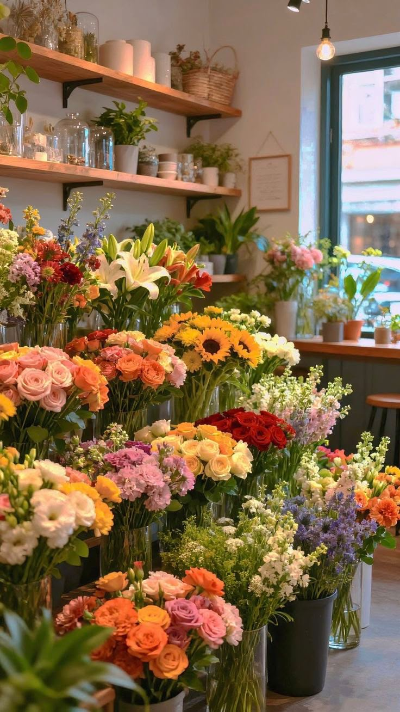
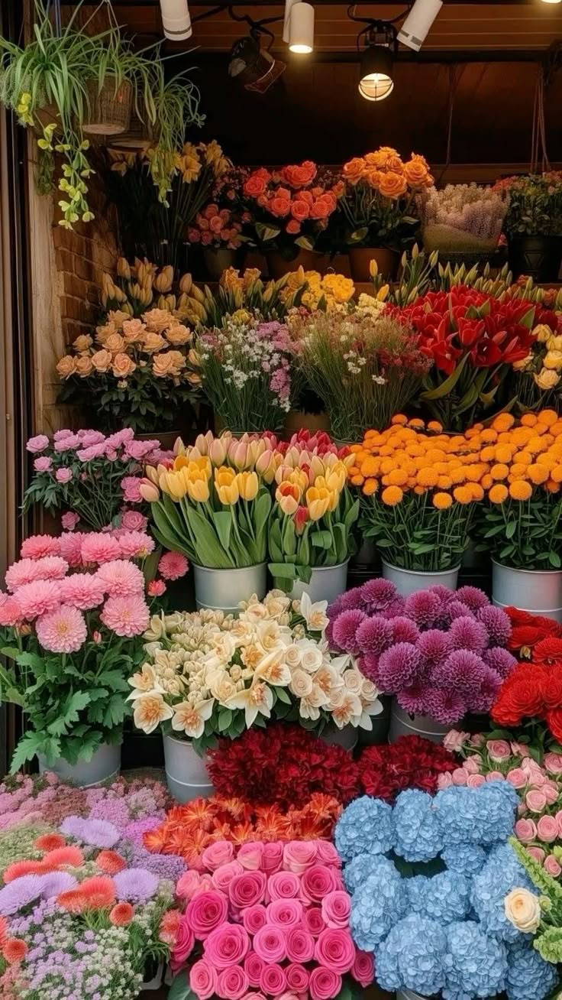
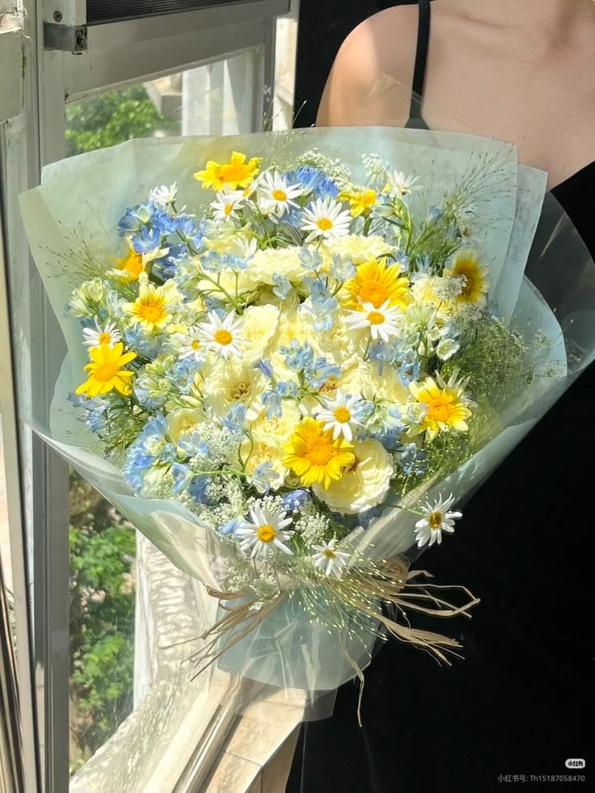
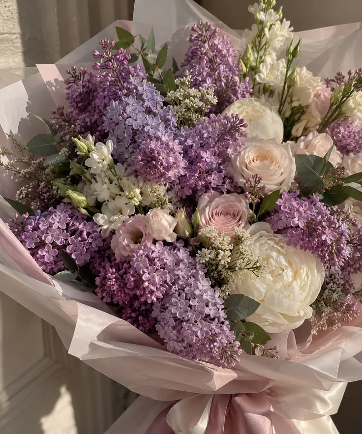

.png) SHIBUYA GRAND FLORIST
SHIBUYA GRAND FLORIST
SHIBUYA GRAND FLORIST
SHIBUYA GRAND FLORIST
Um Refúgio Botânico na MetrópoleLocalizada no vibrante coração de Shibuya, a Midori no Hibi (Dias Verdes) traz um toque de serenidade e sofisticação oriental para o seu dia a dia. Combinando a tradição artística do Japão com a delicadeza de paletas em tons pastéis de verde e azul, oferecemos uma seleção incomparável de flores frescas para todas as ocasiões.


além desses buques temos nosso kit onde vc mesmo pode fazer seu proprio buque;
Em caso de interesse entre em contato por esse Numero +81 3-5550-4820,ou encomende atraves desse site você sera atendido com atenção e carinho.






se quiser saber mais sobre os buques acesse nosso @ do instagrgram, que é @midorinohibi.flowers.